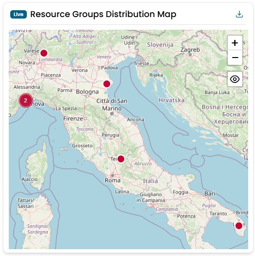
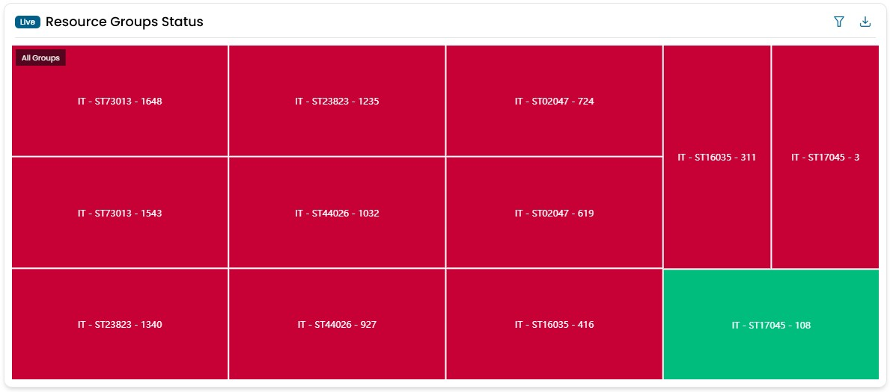
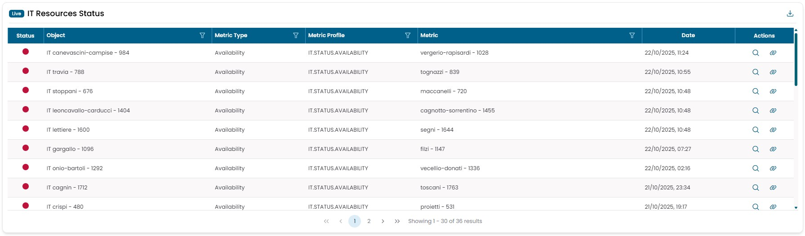
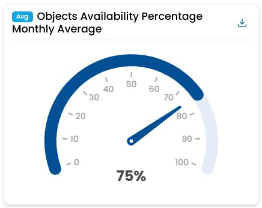
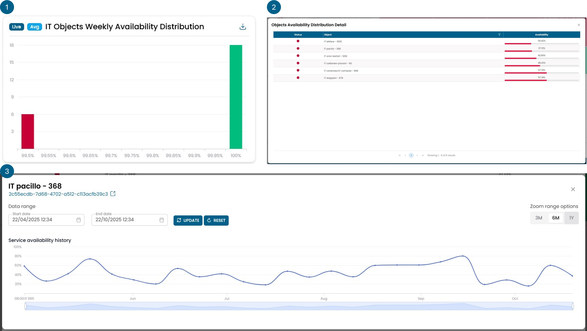

IT Infrastructure
Resource Groups Distribution Map
Shows the geographic distribution of all IT objects groups. The data are collected in real time. By clicking on one of the dots you can access the detiled information of that object. The color of the dots represent the status of the object, could be green, reb, yellow, purple, grey.
Info
- Red indicates the presence of a problem.
- Yellow indicates the presence of a warning.
- Green represents the correct status of an object.
- Purple indicates that no data is being retrieved for the object.
- Gray represents an object that has no data.

Resource Groups Status
Shows the state of the resources groups. The color of the boxs represent the status of the object, could be green, reb, yellow, purple, grey. By clicking on a box you can drill down to explode each object to its metrics, to find which is the cause of a problem.
Info
- Red indicates the presence of a problem.
- Yellow indicates the presence of a warning.
- Green represents the correct status of an object.
- Purple indicates that no data is being retrieved for the object.
- Gray represents an object that has no data.

IT Resources Status
Shows the status of all resources of the IT infrastructure. This is the widget that allow you to see each problem that is present on the infrastructure in any given time. The objects are sorted by color, having the reds on top, and by date, with the most recent on top. By clicking on the magnifying glass, you can view the history of the statuses associated with that object. Meanwhile, clicking on the chain symbol opens a modal window with information about the actions taken by the automata for managing that critical event.
Info
- Red indicates the presence of a problem.
- Yellow indicates the presence of a warning.
- Green represents the correct status of an object.
- Purple indicates that no data is being retrieved for the object.
- Gray represents an object that has no data.

Objects Availability Percentage Monthly Average
This widget displays the percentage of infrastructure objects that have had an average availability rate greater than 99.95% over the past month.
By clicking on the gauge you can open a new window with the time availability trend over 6 months.
It does not represent the overall average availability of the infrastructure.
Example
If I have 4 infrastructure objects, 3 of them have a monthly average availability of 100%, and one of them has a monthly average availability of 90%, this widget will show an indication of 75%, since 3 out of 4 objects have a monthly average availability greater than 99.95%.

IT Objects Weekly Availability Distribution
The widget consists of several views represented by the figure below with the three numbers.
The first view displays a histogram that categorizes various infrastructure objects based on their average availability calculated over the last week. All objects with an availability rate below 99.5% fall into the leftmost column, highlighted in red.
By clicking on one of the bars, you transition to the second view, which provides detailed information on the objects present in that column and their exact average availability values.
Clicking on a specific object takes you to the third view, where the trend of that object's availability over time is displayed.
